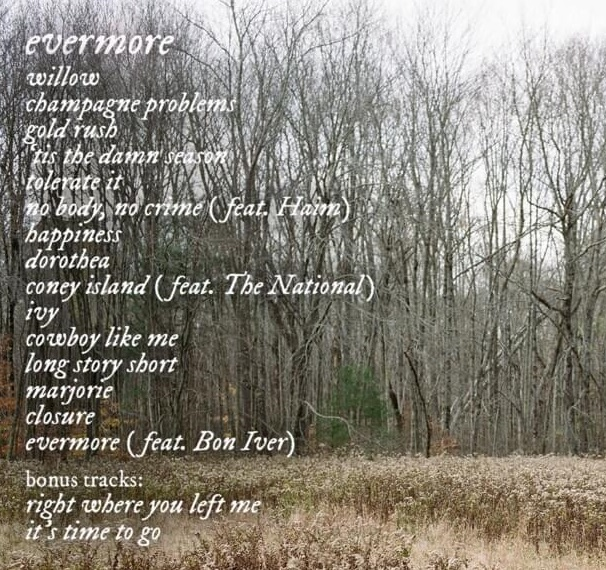
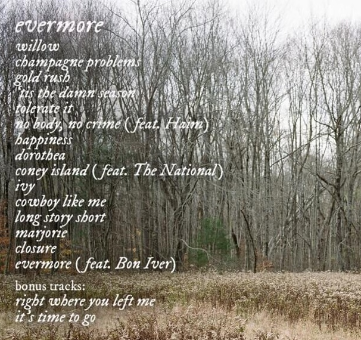

Todo sobre
Taylor Swift
Willow
Primer single de su último trabajo discográfico "Evermore", el cual fue lanzado a través de Republic Records el 11 de diciembre de 2020, menos de cinco meses después del octavo álbum de estudio de Swift, Folklore. Evermore es un "disco hermano" de su predecesor, siendo ambos álbumes sorpresa anunciados en las redes sociales horas antes de su lanzamiento. Es principalmente un álbum de rock alternativo y chamber rock que expande los sonidos indie/folk de Folklore, y gira en torno a un conjunto fresco de narraciones que no se cuentan en su predecesor. El álbum cuenta con la participación de bandas estadounidenses como Bon Iver, Haim, y The National.
evermore
 

Descarga ahora su nuevo álbum